I fenomeni sono manifestazioni osservabili: anomalie ambientali, residui, esercizi rituali, incidenti e casi in cui una magia funziona ma viene usata fuori contesto. Non ogni voce è una creatura o una forza sconosciuta.
Il repertorio comprende 24 voci illustrate: dodici casi diagnostici e dodici manifestazioni ricorrenti. Le schede distinguono apparenza e causa, indicano estensione e alimentazione e spiegano come verificare le ipotesi. Le situazioni hanno conseguenze e sviluppi aperti.
Attivo: la situazione è in movimento. Critico: richiede attenzione per il rischio corrente. Dormiente: la funzione è predisposta ma non in esercizio; le persone continuano comunque a custodire, lavorare e decidere.
24 fenomeni
Un tecnico posa il regolo sul banco e ottiene due risultati incompatibili: il calcolo ordinario concorda con la posizione attuale, il modello investito continua a certificare quella precedente.
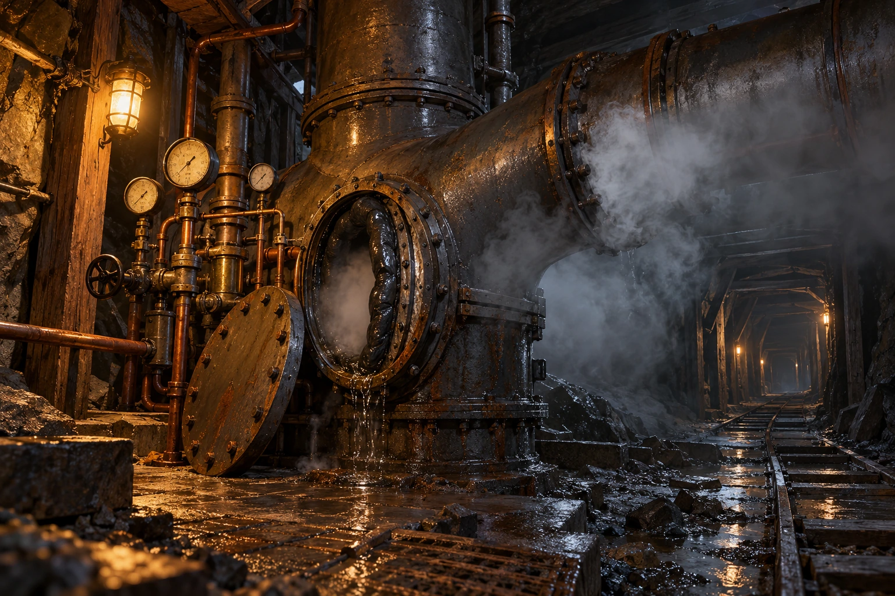
The Breathing SeamIncidente di flussoDeren · CriticoDal giunto arriva un soffio intermittente, come un respiro.
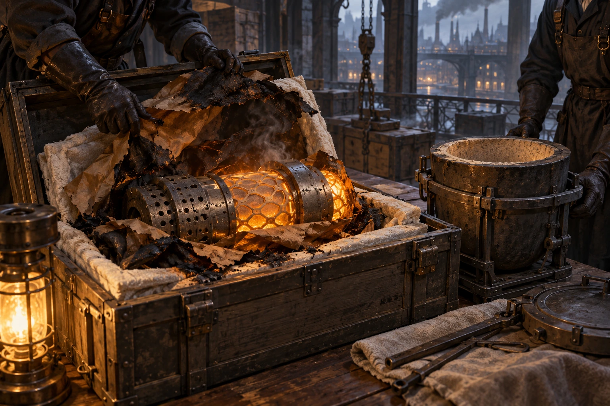
The False Heat DebtScarica termicaKessel · AttivoUn imballo si annerisce dall’interno; chi lo apre trova ceramica virata e metallo troppo caldo, benché il carico non sia passato vicino a una fiamma.
 The Closed GillIncompatibilità clinicaNamar · Attivo
The Closed GillIncompatibilità clinicaNamar · AttivoLa ferita sanguina meno, ma il paziente Serekh fatica a respirare.
The Honest ContradictionContraddizione probatoriaTeshen · AttivoDue deposizioni autentiche non raccontano la stessa cosa.
The Silent WedgeFalso affidamentoKeran · AttivoLa campana tace e il cuneo appare saldo, mentre a pochi passi una crepa si allarga sotto un masso diverso.
The Divided BearingInterferenza di navigazioneSouth Shoals · AttivoDue bussole investite indicano direzioni diverse nella stessa imbarcazione, mentre scandaglio e riferimenti costieri restano coerenti.
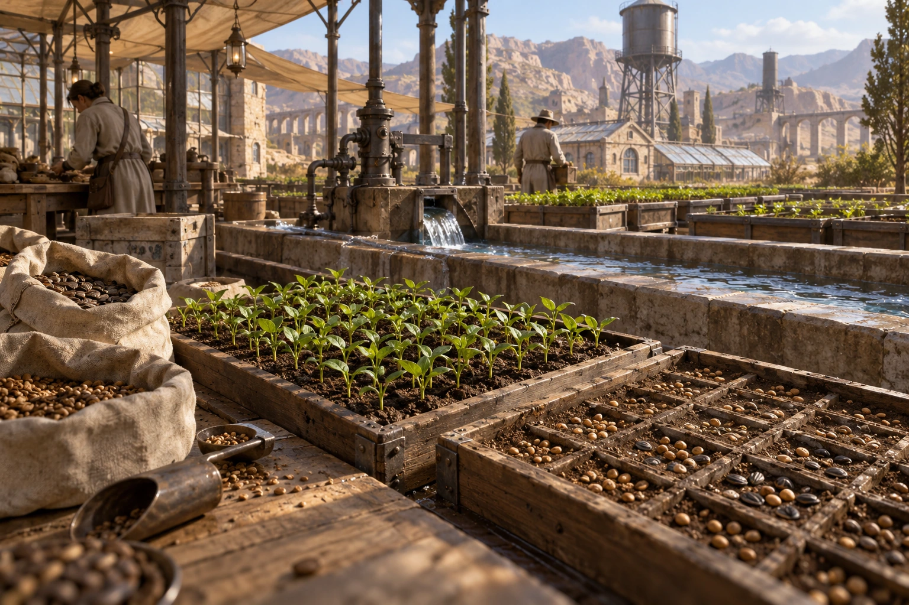
The Sterile PromiseErrore di filiera biologicaQadra · AttivoVassoi seminati nello stesso giorno danno esiti diversi: alcuni semi germinano con il tratto selezionato, altri non germinano affatto.
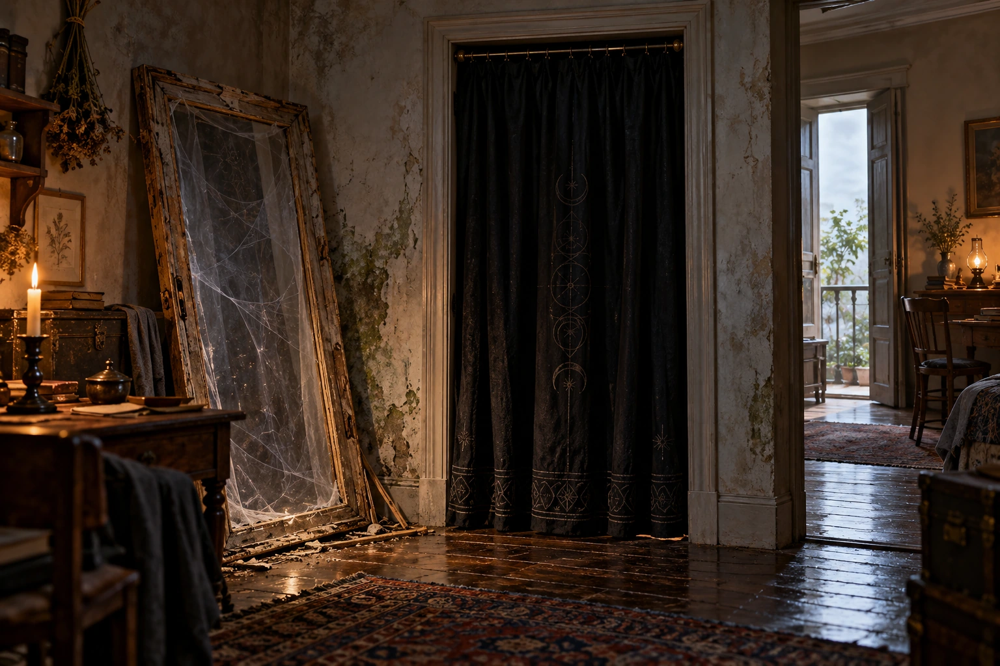
The Unquiet CurtainErrore di occultamentoNoran · AttivoLa stanza sembra schermata perché la tenda nuova è nera quanto la vecchia.
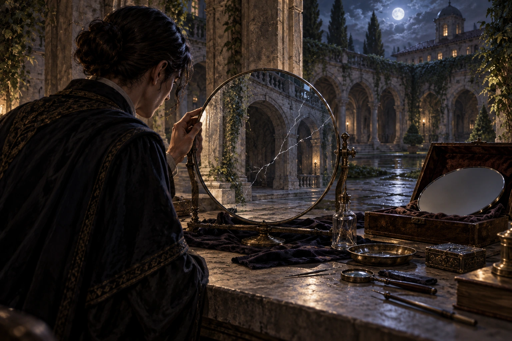
The Spent ReflectionEsaurimento di protezioneTevren · AttivoLa lamina restituisce ancora un riflesso nitido, ma non sostiene una seconda sostituzione difensiva.
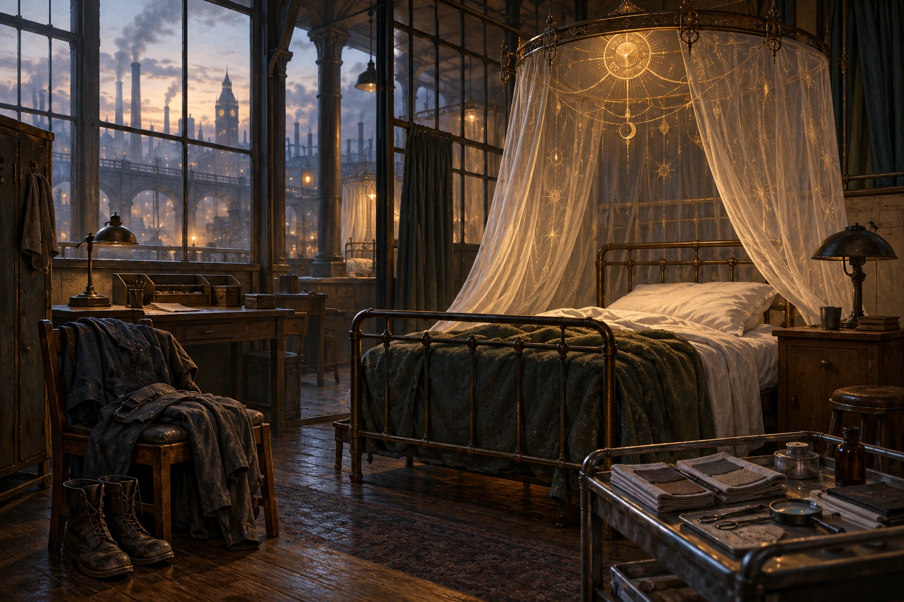
The Convenient RestAbuso di protezioneMersa · AttivoUn lavoratore si sente meno assalito da ansia e stimoli durante il turno, ma accumula stanchezza e perde precisione.
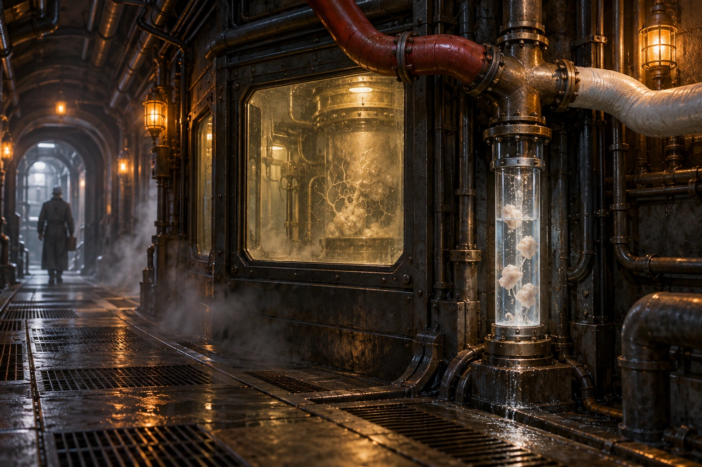
The Shared DrainIncidente compositoEdris · CriticoNel corridoio si registrano calore anomalo e noduli trasportati da una pompa.
The Hollow ReplyResiduo informativoHollow Towers · AttivoParole pronunciate presso la bocca attiva arrivano all’altra terrazza come un’eco vicina, senza la distanza acustica apparente.
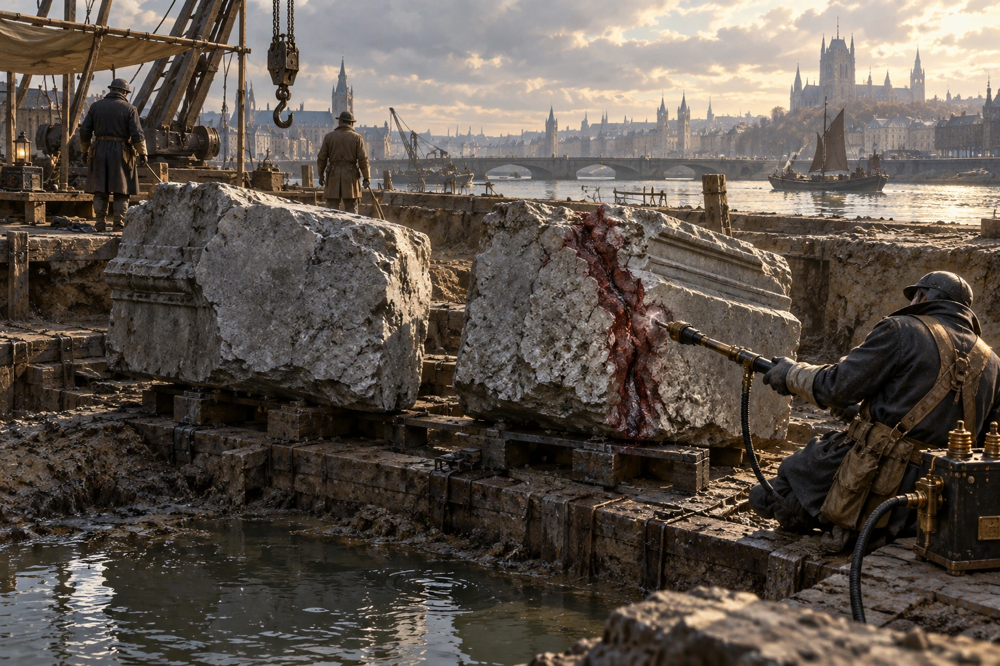
The Grey RecoilResiduo coercitivoGrey Embankment · DormienteQuando un mezzo tenta realmente di riagganciare il vecchio rapporto sul blocco ancora investito, il raccordo incompatibile può respingere carico lungo la sonda.
The Drowned ReposeCustodia funeraria ambientaleSivren · AttivoDurante la sommersione un’attività residua che prima raggiungeva il pontile torna a essere percepibile presso la sua ancora.
 The White Reed ExchangeEcologia investitaLow Fen · Attivo
The White Reed ExchangeEcologia investitaLow Fen · AttivoUna parcella nutrita può sostenere per breve tempo un ceppo in ombra o danneggiato.
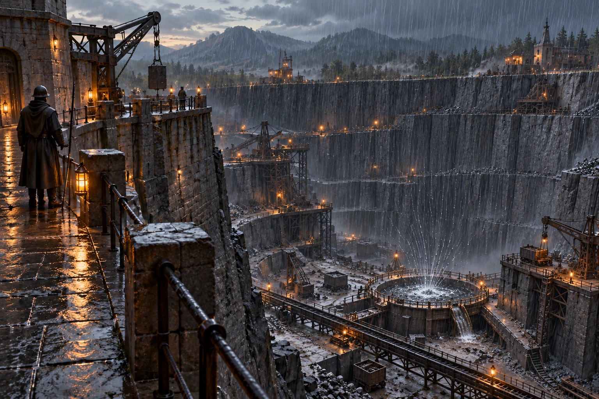
The Inward RainAnomalia gravitazionale localeKoshen · DormienteQuando la raccolta è attiva, le gocce che attraversano il volume piegano verso il medesimo centro.
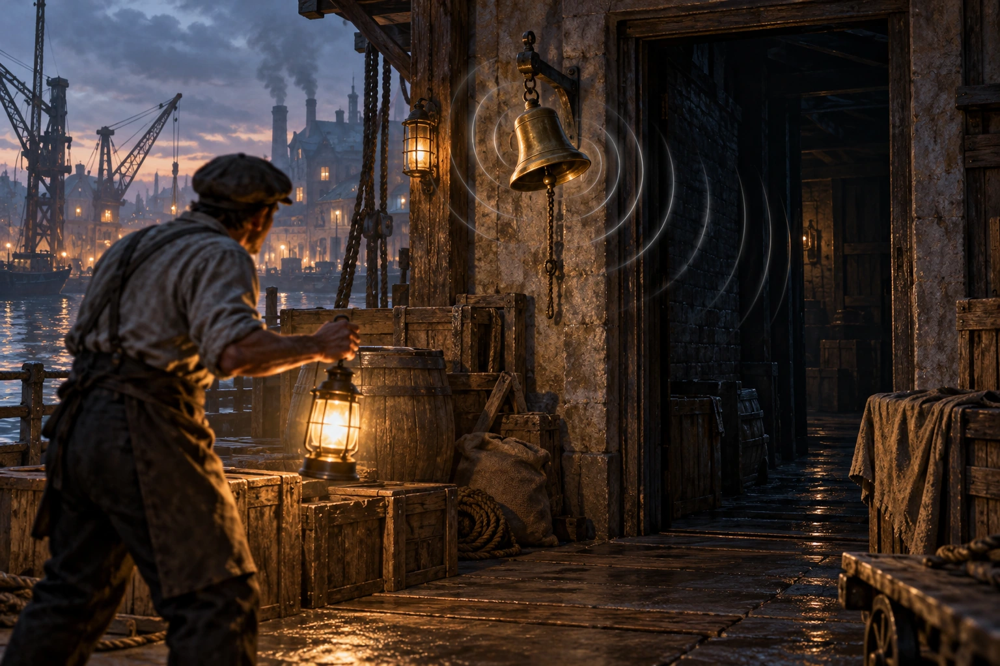
The Broken SoundSilenzio investitoDorven · DormienteUn richiamo o una vibrazione che attraversa il tratto raggiunto perde la continuità necessaria a propagarsi oltre.
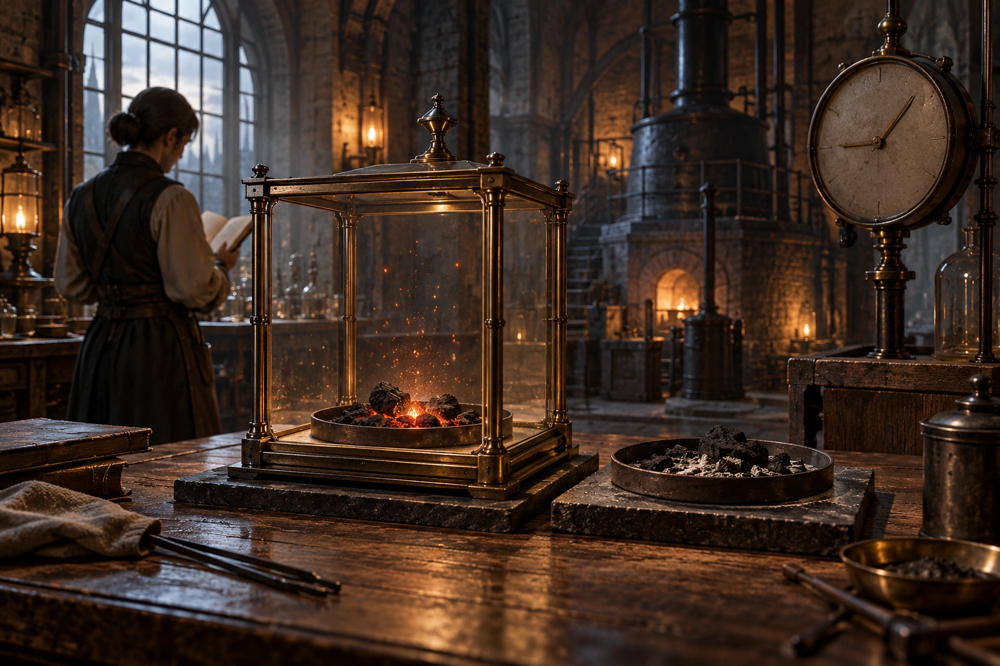
The Ash IntervalRitmo temporale investitoSaura · DormienteUna brace e le sue faville evolvono più lentamente nel tratto raggiunto.
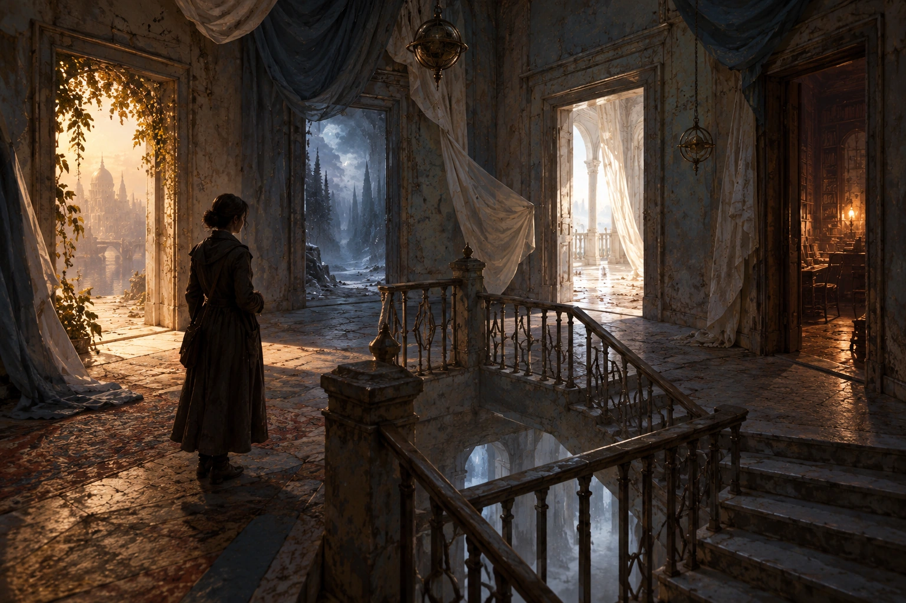
The Shared StairContagio onirico circoscrittoArula · AttivoI sognatori possono incontrare porzioni della scena condivisa e influenzarne piccoli dettagli attraverso i percorsi realmente collegati.
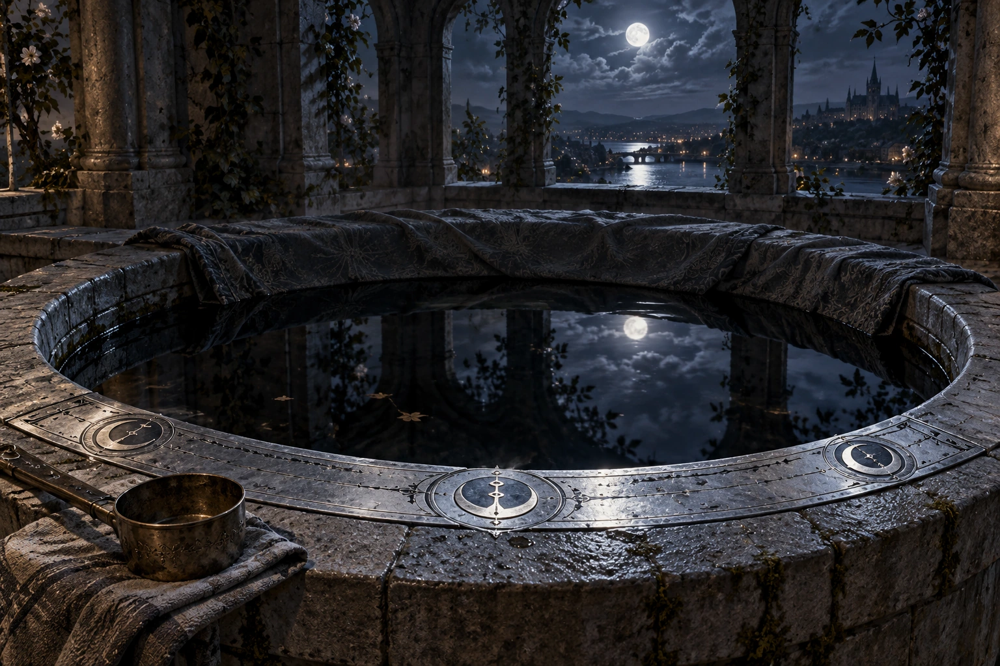
The Moon-Tide DebtCiclo ritualeIrela · DormienteIl contatto previsto può imprimere un’afflizione fredda e dolorosa nella mano raggiunta.
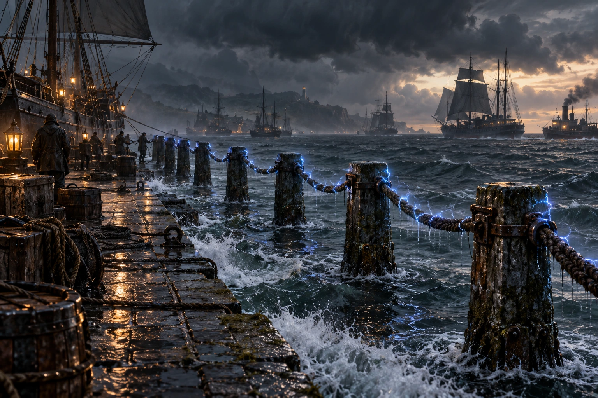
The Blue CrownScarica ambientaleNorell Roads · AttivoSui punti alti compare un bordo azzurro; una scarica può seguire funi bagnate o parti metalliche realmente collegate.
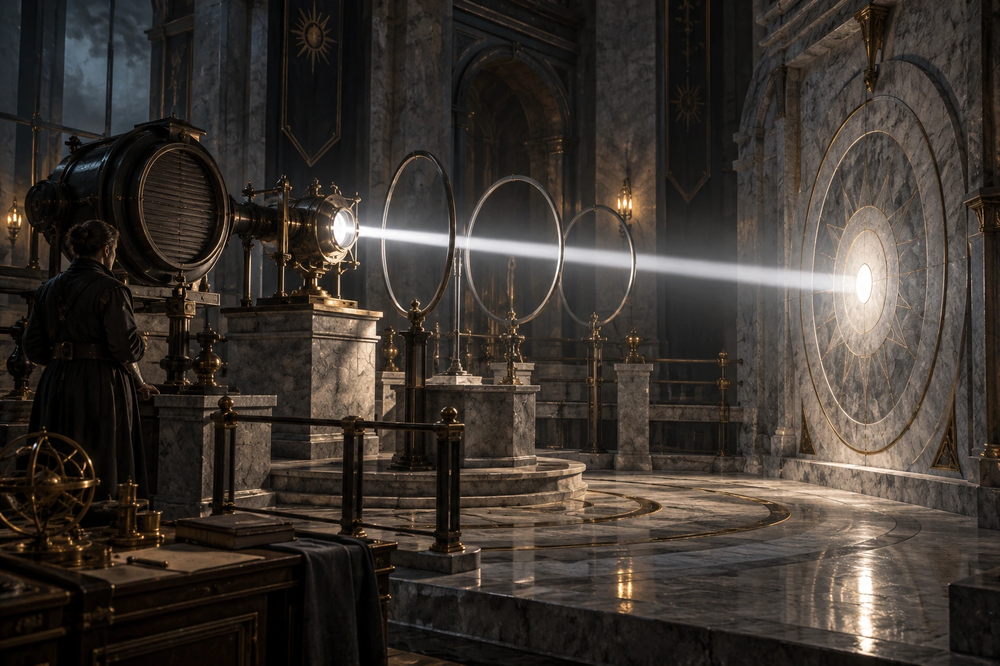
The AfterlightEmissione residuale superioreVelis · DormienteDopo che la sorgente visibile di prova è stata schermata, un’interfaccia predisposta continua a emettere la quota conservata.
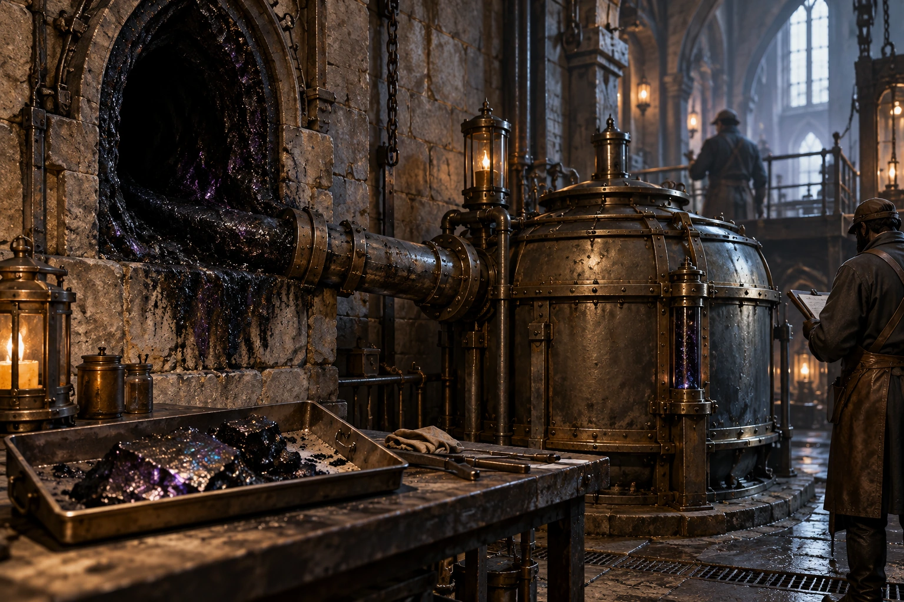
The Hunger LineDrenaggio consumanteAsren · DormienteMateriale compatibile accostato alla bocca di servizio perde la componente presa anche quando il lotto previsto è finito.
Come leggere una scheda
Il luogo indica dove il fenomeno è documentato, non tutta la sua categoria nel mondo. La durata appartiene al caso o alla riserva descritti. Un pericolo spirituale non è sempre visibile a occhio nudo, e l’assenza di segni spettacolari non prova sicurezza. Una diagnosi tecnica non decide automaticamente colpa e responsabilità civile.
Fenomeni cosmologici e siti
Le manifestazioni di The Origin hanno una trattazione dedicata. Ambienti cosmologici e siti sovrannaturali descrivono condizioni e accessi dei luoghi; opere ed eredità di Edran raccolgono le manifestazioni legate a quelle opere. Queste voci restano nelle rispettive categorie e non vengono conteggiate come nuovi PHN.